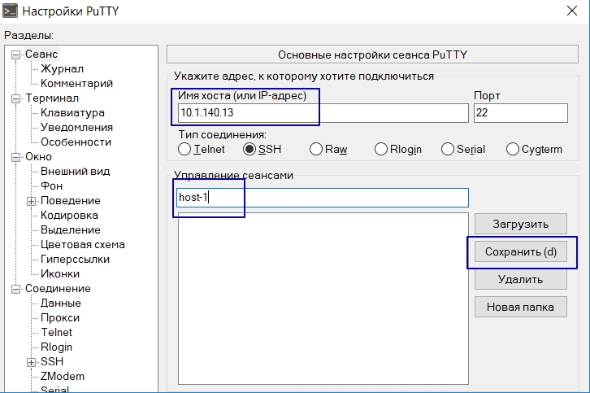
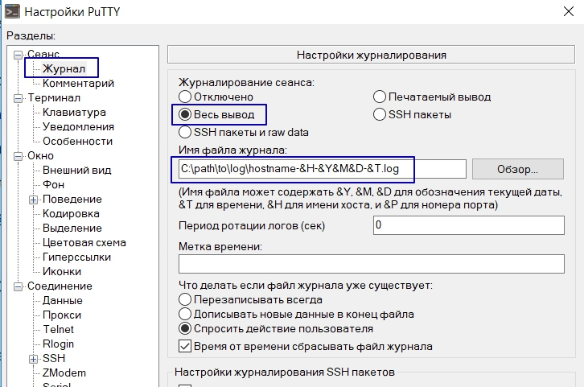
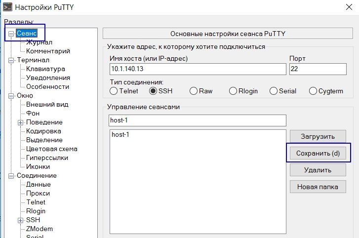
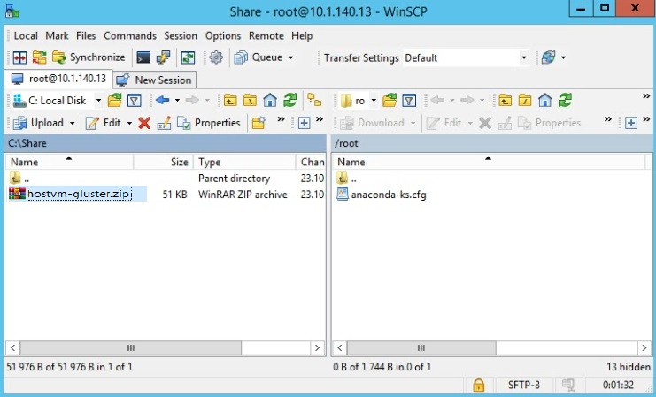

Подготовка сервера к развертыванию на локальных дисках
Подготовка putty к работе
Убедитесь, что требования, описанные на странице Системные требования выполняются.
С помощью программы PuTTY, которая доступна в наборе дистрибьютивов для развертывания решения, под пользователем root подключитесь к серверу.
Перед началом работы рекомендуется настроить логирование сессии putty. Для этого нужно выполнить следующие действия
-
Сохраните имя сервера: 
-
Перейдите на вкладку Журнал (мы можем добавить ссылку на страницу с этой вкладкой?), выберите
Весь вывод, укажите путь до файла логов в следующем виде:C:\path\to\log\hostname-&H-&Y&M&D-&T.log. Часть&H-&Y&M&D-&Tуказывает, что файл с логом будет создаваться для каждой сессии и автоматически указывать время и дату ее начала:
 -
Перейдите на вкладку Сеанс, нажмите кнопку
Сохранить, нажмите клавишуEnterчтобы запустить сессию: 
Проверить, что диск предназначенный для размещения виртуальных машин подключен
Командой cat /etc/fstab выведите на экран список используемых в системе устройств хранения. В качестве точки монтирования мы использовали директорию /data.
[root@host1 ~]# cat /etc/fstab
#
# /etc/fstab
# Created by anaconda on Fri Nov 1 09:31:43 2019
#
# Accessible filesystems, by reference, are maintained under '/dev/disk'
# See man pages fstab(5), findfs(8), mount(8) and/or blkid(8) for more info
#
/dev/mapper/centos_host1-root / xfs defaults 0 0
UUID=2412661b-df41-46c7-ad31-b5b696dfc218 /boot xfs defaults 0 0
/dev/mapper/centos_host1-data /data xfs defaults 0 0
/dev/mapper/centos_host1-swap swap swap defaults 0 0
Проверить, что сетевые настройки выполнены верно
Убедитесь, что внешняя сеть доступна для сервера с помощью команды ping -c 4 <ip-адрес>
[root@testname1 ~]# ping -c 4 8.8.4.4
PING 8.8.4.4 (8.8.4.4) 56(84) bytes of data.
64 bytes from 8.8.4.4: icmp_seq=1 ttl=43 time=46.8 ms
64 bytes from 8.8.4.4: icmp_seq=2 ttl=43 time=46.6 ms
64 bytes from 8.8.4.4: icmp_seq=3 ttl=43 time=46.6 ms
64 bytes from 8.8.4.4: icmp_seq=4 ttl=43 time=47.0 ms
--- 8.8.4.4 ping statistics ---
4 packets transmitted, 4 received, 0% packet loss, time 3004ms
rtt min/avg/max/mdev = 46.648/46.796/47.018/0.153 ms
Убедитесь, что имена внешней сети разрешаются:
[root@testname1 ~]# ping -c 4 yandex.ru
PING yandex.ru (5.255.255.70) 56(84) bytes of data.
64 bytes from yandex.ru (5.255.255.70): icmp_seq=1 ttl=52 time=31.2 ms
64 bytes from yandex.ru (5.255.255.70): icmp_seq=2 ttl=52 time=31.1 ms
64 bytes from yandex.ru (5.255.255.70): icmp_seq=3 ttl=52 time=31.1 ms
64 bytes from yandex.ru (5.255.255.70): icmp_seq=4 ttl=52 time=33.0 ms
--- yandex.ru ping statistics ---
4 packets transmitted, 4 received, 0% packet loss, time 3003ms
rtt min/avg/max/mdev = 31.135/31.632/33.001/0.800 ms
Установка необходимых пакетов
- Установите пакеты wget, zip, unzip, ansible:
yum install wget zip unzip ansible -y
...
Installed:
unzip.x86_64 0:6.0-20.el7 wget.x86_64 0:1.14-18.el7_6.1 zip.x86_64 0:3.0-11.el7 ansible-2.4.2.0-2.el7.noarch
Complete!
- Проверьте, что ansible установлен:
ansible -m ping localhost
localhost | SUCCESS => {
"changed": false,
"ping": "pong"
}
- Загрузите zip-архив
hostvm-gluster.zipс портала, разместите его в папке/root/. Для передачи файла на сервер с рабочего места, где установлена ОС Windows, необходимо использовать утилиту WinSCP, которая доступна в наборе дистрибьютивов для развертывания решения. 
[root@host1 ~]# ls -l
-rw-------. 1 root root 1744 Oct 21 16:52 anaconda-ks.cfg
-rw-r--r--. 1 root root 57619 Oct 22 11:18 hostvm-gluster.zip
[root@host1 ~]# pwd
/root
- Разархивируйте папку:
unzip hostvm-gluster.zip -d /root/
- Проверьте состав файлов:
[root@host1 ~]# ls -l
total 72
-rw-------. 1 root root 1744 Oct 21 16:52 anaconda-ks.cfg
drwxr-xr-x. 6 root root 268 Oct 22 10:42 ansible
-rw-r--r--. 1 root root 57619 Oct 22 11:18 hostvm-gluster.zip
-rw-r--r--. 1 root root 5115 Oct 21 16:18 IP-wizard.sh
- Скопируйте содержимое папки
ansibleв папку/etc/ansible:
[root@host1 ~]# yes | cp -rpf /root/ansible/* /etc/ansible/
cp: overwrite ‘/etc/ansible/ansible.cfg’? cp: overwrite ‘/etc/ansible/hosts’? [root@host1 ~]#
[root@host1 ~]#
Заполнение формы для установки значений переменных
Сбор данных для заполнения формы
Перед началом работы рекомендуется заполнить последний столбец следующей таблицы (способ сбора данных для таблице описан ниже по тексту):
| Название | Как узнать | Значение |
|---|---|---|
| ip для engine | - | |
| ip сервера | ip addr | |
| ip шлюза по умолчанию | ip route | |
| ip dns-сервера | - | |
| домен установки | - | |
| hostname сервера | - | |
| название интерфейса | ip addr | |
| предпочтительный gluster-hostname | - | |
| предпочтительное название тома gluster | - | |
| директорию для размещения тома gluster | - |
Для получения ip-адреса сервера и название интерфейса выполните команду ip addr :
Согласно примеру ниже видно, что ip-адрес сервера - 10.1.140.13, название интерфейса - enp3s0.
[root@host1 ~]# ip addr
1: lo: <LOOPBACK,UP,LOWER_UP> mtu 65536 qdisc noqueue state UNKNOWN group default qlen 1000
link/loopback 00:00:00:00:00:00 brd 00:00:00:00:00:00
inet 127.0.0.1/8 scope host lo
valid_lft forever preferred_lft forever
inet6 ::1/128 scope host
valid_lft forever preferred_lft forever
2: enp3s0: <BROADCAST,MULTICAST,UP,LOWER_UP> mtu 1500 qdisc mq state UP group default qlen 1000
link/ether 00:17:a4:77:00:0c brd ff:ff:ff:ff:ff:ff
inet 10.1.140.13/25 brd 10.1.140.127 scope global noprefixroute enp3s0
valid_lft forever preferred_lft forever
inet6 fe80::b50a:7c22:2229:b169/64 scope link noprefixroute
valid_lft forever preferred_lft forever
3: enp7s0: <BROADCAST,MULTICAST,UP,LOWER_UP> mtu 1500 qdisc mq state UP group default qlen 1000
link/ether 00:17:a4:77:00:0e brd ff:ff:ff:ff:ff:ff
Для получения ip-адреса шлюза выполните команду ip route.
Согласно примеру ниже видно, что ip шлюза по умолчанию - 10.1.140.1
[root@host1 ~]# ip route
default via 10.1.140.1 dev enp3s0 proto static metric 100
10.1.140.0/25 dev enp3s0 proto kernel scope link src 10.1.140.13 metric 100
Для параметры связанные с glusterfs могут быть выбраны значения по умолчанию:
| Название | Значение по умолчанию |
|---|---|
| предпочтительный gluster-hostname | glusternode1 |
| предпочтительное название тома gluster | hosted-engine |
| директорию для размещения тома gluster | /data/gluster/hosted_engine |
Обратите внимание, что рекомендуется использовать отдельный раздел для размещения тома glusterfs, который имеет точку монтирования в директории /data
Запуск программы-помощника IP-wizard
Запустите IP-wizard.sh, чтобы подготовить файлы переменных к работе. Следуйте указаниями инструкции в программе:
sh IP-wizard.sh
Добро пожаловать в программу-помощник IP-wizard Группы компаний ХОСТ!
Мы попросим ответить на несколько вопросов и сформируем нужные файлы конфигурации Ansible.
Внимание! Программа изменит файлы в папках /etc/ansible/group_vars и /etc/ansible/host_vars!
Нажмите ENTER для продолжения или ^C для выхода из программы!
Для принятия значений по-умолчанию просто нажимайте ENTER. ;)
Укажите ваш Домен: mydomain.ru
Домен: mydomain.ru
Укажите кластерный IP адрес oVirt Engine: 10.1.140.15
Engine: 10.1.140.15
Укажите IP адрес первого сервера : 10.1.140.13
nodeip1: 10.1.140.13
Укажите шлюз (gateway) сети первого сервера: 10.1.140.1
Public LAN gateway: 10.1.140.1
Укажите hostname первого сервера (без домена): myhost1
hostname первого сервера: myhost1
На сервере будет развернута нода glusterfs.
Укажите предпочтительный gluster-hostname первого сервера (без домена)(glusternode1): glust1
gluster-hostname первого сервера: glust1
В среде виртуализации для размещения управляющей машины engine будет создан домен хранения hosted-engine
Укажите предпочтительное название тома gluster (hosted-engine):
Имя тома gluster для домена хранения hosted-engine: hosted-engine
Укажите директорию для размещения тома gluster hosted-engineОбратите внимание, что для установки на разделе выбранного расположения директории должно быть свободно минимум 61ГБ
(/data/gluster/hosted_engine):
Директория для glusterfs : /data/gluster/hosted_engine
Укажите hostname имя интерфейса первого сервера (Например enp2s0f0. Можно посмотреть командой ip addr): enp2s0f0
имя интерфейса первого сервера: enp2s0f0
Укажите ваш DNS сервер: 10.1.64.248
DNS: 10.1.64.248
Начинаю модификацию файлов...
dns_root: 10.1.64.248
Изменен файл /etc/ansible/group_vars/all.
Генерируем /etc/ansible/group_vars/nodes...
ansible_connection: ssh
ansible_ssh_user: root
ansible_ssh_pass: engine
ansible_ssh_common_args: '-o StrictHostKeyChecking=no'
ovirt_engine_ip: 10.1.140.15
ovirt_engine_fqdn: 'engine.mydomain.ru'
ovirt_engine_domain: 'mydomain.ru'
ovirt_engine_password: 'engine'
Изменен файл /etc/ansible/group_vars/nodes.
Генерируем /etc/ansible/host_vars/host1...
hostname: myhost1.mydomain.ru
shothostname: myhost1
ip: 10.1.140.13
ip_gateway: 10.1.140.1
nic_for_ovirtmgmt_bridge: enp2s0f0
gluster_hostname: glust1
Изменен файл /etc/ansible/host_vars/host1.
Генерируем /etc/ansible/group_vars/gluster...
gluster_dir_for_hosted_engine: /data/gluster/hosted_engine/brick1
gluster_hosted_engine_volume_name: hosted-engine
Изменен файл /etc/ansible/group_vars/gluster.
[root@host1 ~]#
Установка виртуализации
Выполните команду ansible-playbook /etc/ansible/make-prepare.yml, чтобы подготовить к работе /etc/hosts.
[root@host1 ~]# ansible-playbook /etc/ansible/make-prepare.yml
Выполните команду ansible-playbook /etc/ansible/make-gluster-storages.yml, чтобы подготовить к работе glusterfs.
[root@host1 ~]# ansible-playbook /etc/ansible/make-gluster-storages.yml
Запустите установку необходимых пакетов виртуализации командой ansible-playbook /etc/ansible/make-ovirt.yml. На ее выполнение уйдет чуть больше часа.
[root@host1 ~]# ansible-playbook /etc/ansible/make-ovirt.yml
[DEPRECATION WARNING]: The TRANSFORM_INVALID_GROUP_CHARS settings is set to allow bad characters in group names by default, this will change, but still be user configurable on deprecation. This feature will be removed in version 2.10.
Deprecation warnings can be disabled by setting deprecation_warnings=False in ansible.cfg.
[WARNING]: Invalid characters were found in group names but not replaced, use -vvvv to see details
PLAY [ovirt-master] *************************************************************************************************************************************************************************************************************************
TASK [Gathering Facts] **********************************************************************************************************************************************************************************************************************
ok: [localhost]
TASK [ovirt-master : Ensure that ovirt-release43.rpm is installed] **************************************************************************************************************************************************************************
[DEPRECATION WARNING]: Invoking "yum" only once while using a loop via squash_actions is deprecated. Instead of using a loop to supply multiple items and specifying `name: "{{ item }}"`, please use `name:
['http://resources.ovirt.org/pub/yum-repo/ovirt-release4
ok: [localhost] => (item=[u'http://resources.ovirt.org/pub/yum-repo/ovirt-release43.rpm'])
3.rpm']` and remove the loop. This feature will be removed in version 2.11. Deprecation warnings can be disabled by setting deprecation_warnings=False in ansible.cfg.
TASK [ovirt-master : Ensure that ovirt-hosted-engine-setup is installed. !A very long time. Wait!] ******************************************************************************************************************************************
[DEPRECATION WARNING]: Invoking "yum" only once while using a loop via squash_actions is deprecated. Instead of using a loop to supply multiple items and specifying `name: "{{ item }}"`, please use `name: ['ovirt-hosted-engine-
setup-2.3.12-1.el7.noarch']` and remove the loop. This feature will be removed in version 2.11. Deprecation warnings can be disabled by setting deprecation_warnings=False in ansible.cfg.
ok: [localhost] => (item=[u'ovirt-hosted-engine-setup-2.3.12-1.el7.noarch'])
TASK [ovirt-master : Ensure that ovirt-engine-appliance is installed. !A very long time. Wait!] *********************************************************************************************************************************************
[DEPRECATION WARNING]: Invoking "yum" only once while using a loop via squash_actions is deprecated. Instead of using a loop to supply multiple items and specifying `name: "{{ item }}"`, please use `name: ['ovirt-engine-
appliance-4.3-20190926.1.el7.x86_64']` and remove the loop. This feature will be removed in version 2.11. Deprecation warnings can be disabled by setting deprecation_warnings=False in ansible.cfg.
ok: [localhost] => (item=[u'ovirt-engine-appliance-4.3-20190926.1.el7.x86_64'])
TASK [ovirt-master : Ensure that expect is installed] ***************************************************************************************************************************************************************************************
[DEPRECATION WARNING]: Invoking "yum" only once while using a loop via squash_actions is deprecated. Instead of using a loop to supply multiple items and specifying `name: "{{ item }}"`, please use `name: ['expect']` and remove the
loop. This feature will be removed in version 2.11. Deprecation warnings can be disabled by setting deprecation_warnings=False in ansible.cfg.
ok: [localhost] => (item=[u'expect'])
TASK [ovirt-master : Ensure that script-hosted-engine-deploy is pushed] *********************************************************************************************************************************************************************
changed: [localhost]
TASK [ovirt-master : Check hosted-deploy status] ********************************************************************************************************************************************************************************************
ok: [localhost]
TASK [ovirt-master : debug] *****************************************************************************************************************************************************************************************************************
ok: [localhost] => {
"msg": "You must run deploy first"
}
PLAY RECAP **********************************************************************************************************************************************************************************************************************************
localhost : ok=9 changed=2 unreachable=0 failed=0 skipped=0 rescued=0 ignored=0
[root@host1 ~]#
Сформированный файл /root/script-hosted-engine-deploy содержит инструкции, необходимые для развертывания виртуализации
Запустите его на исполнение командой /root/script-hosted-engine-deploy | tee -a /root/script-hosted-engine-deploy.log:
/root/script-hosted-engine-deploy | tee -a /root/script-hosted-engine-deploy.log
После завершения развертывания виртуализации откройте браузер и перейдите по адресу https://engine.mydomain.ru, чтобы попасть в панель управления.
Если что-то пошло не так
- Проверить корректность данных, которые были введены в IP-wizard. При обнаружении ошибки выполните команду
ansible-playbook /etc/ansible/clean-node.ymlи начните сначала. - Если на этапе
/root/script-hosted-engine-deploy | tee -a /root/script-hosted-engine-deploy.logпоявилась ошибка, то выполните командуansible-playbook /etc/ansible/clean-node.ymlи начните сначала - Если на этапе
ansible-playbook /etc/ansible/make-prepare.ymlпоявилась ошибка, повторите выполнение данной команды - Если на этапе
ansible-playbook /etc/ansible/make-gluster-storages.ymlпоявилась ошибка, повторите выполнение данной команды - Если на этапе
ansible-playbook /etc/ansible/make-ovirt.ymlпоявилась ошибка, повторите выполнение данной команды - Если после завершения установки вам не открывается страница в браузере с адресом https://engine.mydomain.ru, то
- Проверьте, что ip для engine, указанный в таблице в начале установки отвечает на команду ping
- Проверьте, что имя
engine.mydomain.ruразрешается вашим dns-сервером.
Схема установки hostvm и самостоятельного решения проблем представлена на рисунке ниже:

Если устранить проблему не удалось, обратитесь в техническую поддержку используя инструкцию К обращению приложите лог вывода вашей консоли, который был настроен в начале установки и файл /root/script-hosted-engine-deploy.log.